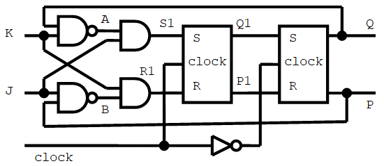

Digital Circuits
| (require circuit-simulation/circuits) |
1 Preface
Modul circuits.rkt provides tools for digital simulation of digital circuits. I have used some of the ideas in section 3.3.4 of “Structure and Interpretation of Computer Programs” by Harold Abelson and Gerald Jay Sussman with Julie Sussman, in particular the use of an agenda. My module differs in many aspects, though, the agenda too.
This document intentionally contains some repetitions of the same or similar phrases in order to avoid hyperlinks where text is relevant on the spot.
2 Introduction
Digital circuits consist of gates and wires. Circuits are made by circuit constructors, which themselves can be made with syntax make-circuit-constr. Gates are elementary circuits. Their constructors are provided by module circuits.rkt. For each wire and each occurrence of a gate a distinct object is made. Circuits can be nested as subcircuits in an enveloping circuit, but at the finest grain level, all circuits consist of distinct instances of wires and distinct instances of Not, Nand, Nand3 and Delay gates only. More gates are available. These are: And, And3, Or, Or3, Nor, Nor3, Xor, If and Imply. They are built with Not, Nand and Nand3 gates. The names of gates, or rather their constructors, start with a capital letter in order not to shadow procedure not and syntaxes like and, nand, or and delay as provided by Racket.
Ternary logic is used, F and T for a determinate signal and ? for an indeterminate signal, id est, a signal not yet known. F represents false cq low. T represents true cq high. When a signal changes from F to T, it is said to raise. When it changes from T to F, it is said to drop. If all inputs of a gate are determinate, its output is determinate too. Its output is indeterminate if one or more of the inputs are indeterminate and various determinate outputs can be expected when replacing the indeterminate inputs by determinate ones. For example, an And gate gives indeterminate output if one input is T and the other one is indeterminate, for in this case the output depends on which determinate signal will be given for the indeterminate input. If one input is F, the other input is irrelevant and the output is F. Section Truth tables shows the ternary truth tables of the predefined gates.
A gate output can be connected via a wire to the inputs of one or more other gates or even to an input of the same gate itself. A wire with bifurcations to several gate inputs is regarded as one single wire. A circuit usually has one or more external input and output contacts. They connect to external input and output wires. A wire that connects a gate output with one or more gate inputs and is not an external output wire, is an internal wire. A wire cannot be both a gate output and an external input wire. Every wire can be an external output wire. An external wire of an embedded circuit can be but not necessarily is an internal wire of the enveloping circuit. The signals on two or more wires can mutually depend on each other, as for example in a latch or a flip-flop.
A wire preserves its signal as long as not mutated. After mutation, the new signal is preserved up to the next mutation, and so on. When the signals on one or more inputs of a gate change, the signal on the output may change. However, this change always is delayed by at least one small unit of time. Therefore we use an agenda that records which wires will change signal and at which times. When a wire signal changes, all gates that have this wire as input are triggered such as to compute new outputs and to schedule mutations of the output signals. When the signals of two or more inputs of a gate change at the same time, the gate is triggered once only with the new signals on all its inputs. If none of the inputs change, the gate is not triggered. When a gate is triggered but the new input signals do not change the output, no mutation of the output wire is scheduled.
3 How to proceed
Simulation is done by procedure agenda-execute!, but some preparation is required in order to make and install the circuit. A simulation can be done in various ways, for example as follows:
(define my-circuit-constr (make-circuit-constr description ...))
Defines a circuit constructor. The description can be a straightforward list of the elements of a diagram of the circuit.(define input-wire (wire-make name [signal])) ...
(define output-wire (wire-make name [signal])) ...
Defines external input and output wires and initializes their signals.
Usually, but not necessarily, output-wires are initialized with indeterminate signal ?.(my-circuit-constr input-wire ... output-wire ...)
Installs an instance of the circuit and connects it to its external input and output wires.
The constructor returns #<void>, but does make a circuit behind the screen and schedules events in the agenda. No simulation yet.(agenda-schedule! input-wire signal [delay]) ...
Optionally use procedure agenda-schedule! or syntax agenda-sequence! to put signals on input wires, either without delay or scheduled for a future time. More than one such event can be scheduled for the same time and more than one event can be scheduled for several times for the same wire. Scheduling an event for the same time and wire as already scheduled, cancels the earlier one.(agenda-execute!)
Call procedure agenda-execute! to start or to resume the simulation. The first call corresponds to power up of the circuit. Special care must be taken for a circuit with mutual dependency between the signals on its wires. Such dependency may cause instability, id est, oscillating signals ad infinitum on one or more wires, thus causing an infinite loop. Parameter agenda-time-limit protects against such loops:
(parameterize ((agenda-time-limit time-limit)) (agenda-execute!))
If you want a report of the simulation, call agenda-execute! as follows: (agenda-execute! #t) or as:
(parameterize ((agenda-report #t)) (agenda-execute!))
A report shows all mutations on the wires and at which times, internal wires included.In addition to any format or output procedure of Racket, procedure wire-print or wire-println can be used to see the final signals on the output wires together with their names. Simply typing the identifiers of wires will do too.
Halt here or repeat from step 4.
For examples see the next section and section More examples.
4 Example: a D-flip-flop
As introductory example a D-flip-flop.
It has two inputs, say in and clock.
It has two outputs, say state and state-inverse.
Once stable, the outputs remain inverses of each other
and the following transition table applies:
clock |
| in |
| old state |
| │ |
| new state |
| new state-inverse |
| action |
T |
| F |
| any |
| │ |
| F |
| T |
| reset |
T |
| T |
| any |
| │ |
| T |
| F |
| set |
F |
| any |
| state |
| │ |
| state |
| inverse of state |
| state preserved |
Hence, in order to set or reset the D-flip-flop, set in to T cq F and apply a T pulse to the clock. Leave the clock low at F in order to preserve the state without being disturbed by changes on wire in. There are several ways to construct a D-flip-flop. The following diagram shows one consisting of four Nand gates.

The D-flip-flop must be stabilized with a T pulse on the clock and in hold at F or T. When clock=F the signals on wires set and reset raise to T and the two Nand gates at the right of the diagram act as inverters for the signals on wires state and state-inverse. This means that these signals will oscillate during power up with clock=F and the same determinate signal F or T on wires state and state-inverse. Raising the clock to T stabilizes the state and state-inverse such as to become inverses of each other. Once stabilized they always end up as inverses of each other. This is shown in the sequel.
With syntax make-circuit-constr a constructor for a simulator can be made by straightforwardly listing the elements of the diagram:
> (define D-flip-flop-constr (make-circuit-constr 'D-flip-flop ; name (in clock) ; external input wires (state state-inverse) ; external output wires ; gates: four distinct instances ; output (Gate input ...) (reset (Nand clock in)) (set (Nand clock reset)) (state (Nand reset state-inverse)) (state-inverse (Nand set state))))
The order in which the gates (or subcircuits) are listed is irrelevant. Syntax make-circuit-constr yields a circuit constructor. Now define the external input and output wires. The internal wires set and reset are taken care of by circuit constructor D-flip-flop-constr. In this example state-wire and state-inverse-wire are initialized with signal F in stead of the default indeterminate signal ?, because this better demonstrates the vibration during power up with clock=F. At power up time the signal on the four wires is F.
> (define in-wire (wire-make 'in F)) > (define clock-wire (wire-make 'clock F)) > (define state-wire (wire-make 'state F)) > (define state-inverse-wire (wire-make 'state-inverse F))
Now install the D-flip-flop. Procedure D-flip-flop-constr returns #<void>. It wants four wires for its arguments: in and clock for its inputs and state and state-inverse for its outputs. It makes an instance of a D-flip-flop and connects the input and output wires to the circuit. It also schedules events in the agenda for power up. No simulation yet.
> (D-flip-flop-constr in-wire clock-wire state-wire state-inverse-wire)
Put instructions in the agenda such as to apply a T pulse on the clock from time 10 to time 20. No simulation yet. For times natural numbers are used without specifying a unit. This unit always is implied and always the same.
; ------------------------------------------ clock is F at time 0 > (agenda-schedule! clock-wire T 10) ; raise clock to T at time 10 > (agenda-schedule! clock-wire F 20) ; drop clock to F at time 20
Now the agenda contains all information needed for the simulation. Procedure agenda-execute! does the simulation. Parameter agenda-report is set to #t indicating that procedure agenda-execute! must print a report. Parameters report-time-width and report-wire-width are used for alignment in the report.
> (define (D-flip-flop-simulator) (display " \nInitial state: ") (wire-println state-wire state-inverse-wire) (display "Simulation:\n") (parameterize ((agenda-report #t) (report-time-width 2) (report-wire-width 13)) (agenda-execute!)) (display "Final state: ") (wire-println state-wire state-inverse-wire))
> (D-flip-flop-simulator)
Initial state: state=F state-inverse=F
Simulation:
time 1 : reset : ? -> T
time 1 : set : ? -> T
time 1 : state : F -> T
time 1 : state-inverse : F -> T
time 2 : state : T -> F
time 2 : state-inverse : T -> F
time 3 : state : F -> T
time 3 : state-inverse : F -> T
time 4 : state : T -> F
time 4 : state-inverse : T -> F
time 5 : state : F -> T
time 5 : state-inverse : F -> T
time 6 : state : T -> F
time 6 : state-inverse : T -> F
time 7 : state : F -> T
time 7 : state-inverse : F -> T
time 8 : state : T -> F
time 8 : state-inverse : T -> F
time 9 : state : F -> T
time 9 : state-inverse : F -> T
time 10 : clock : F -> T
time 10 : state : T -> F
time 10 : state-inverse : T -> F
time 11 : set : T -> F
time 11 : state : F -> T
time 11 : state-inverse : F -> T
time 12 : state : T -> F
time 20 : clock : T -> F
time 21 : set : F -> T
Final state: state=F state-inverse=T
Up to time 10 the clock is F and the signals on wires state and state-inverse oscillate. At time 10 the clock is raised to T. This stabilizes state and state-inverse within 3 time steps such as to become inverses of each other. After time 12 nothing happens until at time 20 the clock is dropped to F, with the only effect that internal signal set raises to T. At this time wire reset has signal T too, but because the state and state-inverse already are inverses of each other, they remain stable.
At this moment the D-flip-flop is in reset state. Now setting it by applying a T pulse on the clock-wire for 5 units of time with in-wire=T, the state and state-inverse switch almost simultaneously, but not quite:
> (agenda-schedule! in-wire T) > (agenda-schedule! clock-wire T) > (agenda-schedule! clock-wire F 5) > (D-flip-flop-simulator)
Initial state: state=F state-inverse=T
Simulation:
time 22 : clock : F -> T
time 22 : in : F -> T
time 23 : reset : T -> F
time 23 : set : T -> F
time 24 : set : F -> T
time 24 : state : F -> T
time 25 : state-inverse : T -> F
time 27 : clock : T -> F
time 28 : reset : F -> T
Final state: state=T state-inverse=F
The state switched at time 24, whereas state-inverse changed at time 25.
During one unit of time state and state-inverse had the same signal T.
The raising output always comes one unit of time earlier than the dropping one.
Notice that the time does not avance while procedure agenda-execute! is not running.
The time is not reset while returning from procedure agenda-execute!.
Let’s test the D-flip-flop for all binary combinations of in, clock and old state.
> (define (test-D-flip-flop flip-flop-constr #:tabulate? (tabulate? #f)) (printf " ~nTesting ~s.~n" (circuit-constr-name flip-flop-constr)) ; ; Procedure test/tabulate does a test. If tabulate? is true, ; it also prints a line of results for the table to be shown. ; (define (test/tabulate in-signal clock-signal old-state) ; ; First put the flip-flop in the desired old-state. ; (agenda-schedule! in-wire old-state) (agenda-schedule! clock-wire T) (agenda-execute!) (agenda-schedule! clock-wire F) (agenda-execute!) ; ; Check that the flip-flop has assumed the desired state. ; (unless (and (eq? (wire-signal state-wire) old-state) (eq? (wire-signal state-inverse-wire) (Not-function old-state))) (error 'flip-flop "test fails")) ; ; Send in-signal and clock-signal to the flip-flop. ; (agenda-schedule! in-wire in-signal) (agenda-schedule! clock-wire clock-signal) (agenda-execute!) ; ; Check the results. ; (define new-state-signal (wire-signal state-wire)) (define new-state-inverse-signal (wire-signal state-inverse-wire)) (or (and (F? clock-signal) (eq? new-state-signal old-state) (eq? new-state-inverse-signal (Not-function old-state))) (and (T? clock-signal) (eq? new-state-signal in-signal) (eq? new-state-inverse-signal (Not-function in-signal))) (error 'flip-flop "test fails")) ; ; If desired print results. ; (when tabulate? (printf "old-state=~s " old-state) (wire-println #:sep " " in-wire clock-wire state-wire state-inverse-wire))) ; ; ─────────────────────────────────────────────────────────────── ; Install the flip-flop. ; (D-flip-flop-constr in-wire clock-wire state-wire state-inverse-wire) ; ; ─────────────────────────────────────────────────────────────── ; First print a header for the table to be printed (if desired). ; (when tabulate? (displayln "────────────────────────────────────────────────────") (displayln "old-state inputs new state") (displayln "─────────── ───────────── ────────────────────────")) ; ; ─────────────────────────────────────────────────────────────── ; Now do the tests. Each test adds a line to the table (if desired). ; Call test/tabulate for all feasible binary inputs. ; (for* ((old-state in-bits) (clock-signal in-bits) (in-signal in-bits)) (test/tabulate in-signal clock-signal old-state)) ; ; ─────────────────────────────────────────────────────────────── ; Close the table. ; (when tabulate? (displayln "────────────────────────────────────────────────────")) ; ; ─────────────────────────────────────────────────────────────── ; Arriving here means that all tests passed. ; (printf "Hurray, all tests passed.~n"))
> (test-D-flip-flop D-flip-flop-constr #:tabulate? #t)
Testing D-flip-flop.
────────────────────────────────────────────────────
old-state inputs new state
─────────── ───────────── ────────────────────────
old-state=F in=F clock=F state=F state-inverse=T
old-state=F in=T clock=F state=F state-inverse=T
old-state=F in=F clock=T state=F state-inverse=T
old-state=F in=T clock=T state=T state-inverse=F
old-state=T in=F clock=F state=T state-inverse=F
old-state=T in=T clock=F state=T state-inverse=F
old-state=T in=F clock=T state=F state-inverse=T
old-state=T in=T clock=T state=T state-inverse=F
────────────────────────────────────────────────────
Hurray, all tests passed.
The two Nand gates at the right of the diagram
form an odd kind of SR-latch.
Compared to a regular SR-latch it interprets its S and R input as their inverses.
S-inverse corresponds to wire reset in the diagram.
R-inverse corresponds to wire set in the diagram.
S-inverse |
| R-inverse |
| | |
| state |
| state-inverse |
| action |
F |
| F |
| | |
| T |
| T |
| don't do this |
F |
| T |
| | |
| T |
| F |
| set |
T |
| F |
| | |
| F |
| T |
| reset |
T |
| T |
| | |
| state |
| state-inverse |
| preserve state |
by setting or resetting it. We can use the latch as a subcircuit in a D-flip-flop:
> (define make-odd-SR-latch (make-circuit-constr 'SR-latch (S-inverse R-inverse) ; inputs (state state-inverse) ; outputs ; gates: (state (Nand S-inverse state-inverse)) (state-inverse (Nand R-inverse state))))
> (define make-D-flip-flop-with-odd-SR-latch (make-circuit-constr 'D-flip-flop-with-odd-SR-latch (in clock) ; inputs (state state-inverse) ; outputs ; gates and subcircuit: (S-inverse (Nand clock in)) (R-inverse (Nand clock S-inverse)) ((state state-inverse) (make-odd-SR-latch S-inverse R-inverse))))
> (test-D-flip-flop make-D-flip-flop-with-odd-SR-latch)
Testing D-flip-flop-with-odd-SR-latch.
Hurray, all tests passed.
More examples in section More examples.
5 Ternary logic
constant |
| printed as |
| predicate |
| description |
| is a trit? |
| also a bit? |
F |
| F |
| F? |
| false, off, low |
| yes |
| yes |
T |
| T |
| T? |
| true, on, high |
| yes |
| yes |
? |
| ? |
| ?? |
| indeterminate |
| yes |
| no |
false/off/low, constant
F : (and/c trit? bit?)
true/on/high, constant
T : (and/c trit? bit?)
indeterminate, constant
constant
constant
predicate
(trit? obj) → boolean?
obj : any/c
predicate
(F? obj) → boolean?
obj : any/c
predicate
(T? obj) → boolean?
obj : any/c
predicate
(?? obj) → boolean?
obj : any/c
Else (trit? obj) yields #f.
(F? obj) is the same as (eq? obj F).
(T? obj) is the same as (eq? obj T).
(?? obj) is the same as (eq? obj ?).
procedure
→ (or/c (listof (listof trit?)) (vectorof (listof trit?))) n : natural? sort? : any/c = #f vector? : any/c = #f
The result is a list or vector of 3n lists of n trits. If sort? has a true value, combinations with determinate trits (bits) only preceed all other ones.
> (trit-combinations 2 #f) ((F F) (F T) (F ?) (T F) (T T) (T ?) (? F) (? T) (? ?))
> (trit-combinations 2 #t) ((F F) (F T) (T F) (T T) (F ?) (T ?) (? F) (? T) (? ?))
The combinations can be used to check a circuit for all feasible inputs
or for making a truth table:
> (define out (wire-make 'out))
> (for ((combination (in-list (trit-combinations 2 #t)))) (apply And (append (map (curry wire-make 'no-name) combination) (list out))) (agenda-execute!) (printf "(And ~s ~s) = ~s~n" (car combination) (cadr combination) (wire-signal out)))
(And F F) = F
(And F T) = F
(And T F) = F
(And T T) = T
(And F ?) = F
(And T ?) = ?
(And ? F) = F
(And ? T) = ?
(And ? ?) = ?
6 Binary logic
The binary digits are F and T.
They are trits too.
Always (implies (bit? x) (trit? x)) → #t.
procedure
→ (or/c (listof (listof bit?)) (vectorof (listof bit?))) n : natural? vector? : any/c = #f
The result is a list or vector of 2n lists of n bits.
> (bit-combinations 3 #:vector #t) #((F F F) (F F T) (F T F) (F T T) (T F F) (T F T) (T T F) (T T T))
7 Agenda
An agenda schedules events, which are instructions to put a new signal on a given wire at a given time in future. More than one event can be scheduled for the same time. For times natural numbers are used without specifying a unit of time. This unit is implied and always the same, may be not more than a small fraction of a nanosecond. Every agenda has a clock called ‘agenda-time’. An agenda never schedules events preceding the current agenda-time. Events are executed in order of progressing time. During a simulation the circuit may schedule more events. These are handled too. After execution of the events for time t the agenda-time is increased to t+1. An agenda can contain more than one event for the same time and for several input wires of the same gate. In that case the gate is triggered once after all these wires have received their new signals. As long as none of the input wires of a gate change signal, the gate is not triggered. When a gate is triggered with input signals that do not change the output, no event is scheduled for this output.
parameter
(current-agenda agenda) → void? agenda : agenda?
= (agenda-make 'the-agenda)
procedure
name : symbol? = 'no-name
> (agenda-make) #<agenda:no-name>
> (object-name (agenda-make 'my-agenda)) my-agenda
procedure
(agenda-reset!) → void?
procedure
(agenda-empty?) → boolean?
> (Not (wire-make 'in F) (wire-make 'out F)) > (agenda-empty?) #f
> (agenda-execute! #t) time 1 : out : F -> T
> (agenda-empty?) #t
> (Not (wire-make 'in F) (wire-make 'out T)) > (agenda-empty?) #t
> (agenda-execute! #t) ; Nothing happens
procedure
(agenda-time) → natural?
> (define a (wire-make 'a T)) > (define b (wire-make 'b T)) > (define c (wire-make 'c F)) > (And a b (wire-make 'and-ab)) > (And a c (wire-make 'and-ac)) > (Xor a b (wire-make 'xor-ab)) > (Xor a c (wire-make 'xor-ac)) > (agenda-execute! #t)
time 2 : and-ab : ? -> T
time 2 : and-ac : ? -> F
time 3 : xor-ab : ? -> F
time 3 : xor-ac : ? -> T
> (wire-init-signal F) > ((make-circuit-constr 'oscillator () () (a (Not a)))) > (agenda-time-limit 9) > (agenda-execute! #t)
time 1 : a : F -> T
time 2 : a : T -> F
time 3 : a : F -> T
time 4 : a : T -> F
time 5 : a : F -> T
time 6 : a : T -> F
time 7 : a : F -> T
time 8 : a : T -> F
time 9 : a : F -> T
agenda-execute!: time-limit 9 exceeded
Considere the number of different internal states of a circuit in combination with the agenda modulo agenda-time. This number is finite. Therefore, it is possible to adapt the simulator such as to detect infinite oscillation. However, this would involve much overhead in terms of both memory usage and execution time. Therefore, this detection has not been implemented.
May be this detection should be added as an option. May be a yet-to-do.
procedure
(agenda-schedule! wire signal [delay]) → void?
wire : wire? signal : trit? delay : natural? = 0
> (define a (wire-make 'a F)) > (agenda-report #t) > (agenda-schedule! a T 10) > (agenda-execute!) time 10 : a : F -> T
> (agenda-time) 11
> (agenda-schedule! a T 10) ; Scheduled for time 11+10=21. > (agenda-execute! #t) ; Nothing happens, for the signal does not change, > (agenda-time) ; but time kept running. 22
syntax
wire : wire?
signal : trit?
delay : natural?
(agenda-schedule! wire signal delay) ...
for each wire and per wire for each combination of signal and delay.
The events are scheduled in the order they appear in the agenda-sequence! form.
When more than one event appears for the same wire and the same delay,
the last one cancels all preceding ones.
> (define-wires a b)
> (agenda-sequence! (a (F 5) (T 5) (F 6)) (b (T 7) (F 8) (F 90))) > (agenda-execute! #t)
time 5 : a : ? -> T
time 6 : a : T -> F
time 7 : b : ? -> T
time 8 : b : T -> F
> (agenda-time) 91
Event (a (F 5)) is canceled by event (a (T 5)).
Event (b (F 90)) is not executed, because it does not alter the signal.
Nevertheless, time kept running until encountering this event.
parameter
(report-time-width) → natural?
(report-time-width minimal-width) → void? minimal-width : natural?
= 1
For a neat report set the parameter to the maximal number of digits expected in the display of a time. A time requiring more than minimal-width decimal digits is not truncated.
parameter
(report-wire-width) → natural?
(report-wire-width minimal-width) → void? minimal-width : natural?
= 1
> (define (install-and-run-circuit show-hidden?) (reset-hidden-cntr!) (agenda-reset!) ((make-circuit-constr 'Circuit (a b) (out) (out (Nand (Nand b (Not a)) (Nand a (Not b))))) ; out Nand•1 Not•2 Nand•3 Not•4 (wire-make 'a F) (wire-make 'b T) (wire-make 'out)) (parameterize ((agenda-report #t) (report-hidden show-hidden?) (report-wire-width 6)) (agenda-execute!))) > (install-and-run-circuit #f) ; Hidden wires not shown. time 3 : out : ? -> T
> (install-and-run-circuit #t) ; Hidden wires are shown.
time 1 : Nand•3 : ? -> T
time 1 : Not•2 : ? -> T
time 1 : Not•4 : ? -> F
time 2 : Nand•1 : ? -> F
time 3 : out : ? -> T
procedure
(reset-hidden-cntr!) → void?
8 Wires
A wire has a name, a signal and a list of actions.
The signal always is a trit.
Each action is related to a gate that has the wire as an input.
An action triggers the gate when the signal on the wire is changed.
A gate with two or more inputs never is triggered more than once at the same
agenda-time.
It is triggered once after all inputs have been computed.
If the input signals do not change, the gate is not triggered.
A gate does not schedule an event for its output if this output will not change.
procedure
name : symbol? signal : trit? = (wire-init-signal)
Circuit constructors add actions to wires.
> (wire-make 'my-wire T) #<wire:my-wire=T>
> (object-name (wire-make 'another-wire)) another-wire
> (define-values (wire-a wire-b) (values (wire-make 'a) (wire-make 'a))) > (equal? wire-a wire-b) #f
> (wire-println wire-a wire-b) a=? a=?
> (agenda-schedule! wire-a T) > (agenda-execute!) > (wire-println wire-a wire-b) a=T a=?
parameter
(wire-init-signal signal) → void? signal : trit?
= ?
> (define (oscillator init-signal) (parameterize ((wire-init-signal init-signal) (agenda-time-limit 7) (agenda-report #t)) ((make-circuit-constr 'Oscillator () () (a (Not a)))) (agenda-execute!) (agenda-reset!))) > (oscillator ?) ; Nothing happens because the inverse of ? is ?. > (oscillator F) ; Oscillates, terminated by a time limit error.
time 1 : a : F -> T
time 2 : a : T -> F
time 3 : a : F -> T
time 4 : a : T -> F
time 5 : a : F -> T
time 6 : a : T -> F
time 7 : a : F -> T
agenda-execute!: time-limit 7 exceeded
procedure
(wire-name wire) → symbol?
wire : wire?
> (define wire (wire-make 'wire)) > (wire-name wire) wire
> (object-name wire) wire
> (wire-signal (wire-make 'who-cares? T)) T
procedure
port : (or/c 'current 'string output-port?) = 'current wire : wire?
If port is 'current the current-output-port is used and #<void> is returned.
If port is an output-port, that port is used and #<void> is returned.
If port is 'string the output is returned as a string.
Every wire is displayed on a separate line, but if port is 'string,
the newline at the end is omitted.
> (define-wires (a F) (b T)) > (wire-print a b)
a = F
b = T
procedure
→ (or/c string? void?) port : (or/c 'current 'string output-port?) = 'current sep : any/c = " " wire : wire?
If port is 'current the current-output-port is used and #<void> is returned.
If port is an output-port, that port is used and #<void> is returned.
If port is 'string the output is returned as a string.
The information is displayed in one line, separated by sep and with a newline at the end. If port is 'string, the newline at the end is omitted.
> (define-wires (a F) (b T)) > (wire-println a b #:port 'string #:sep " and ") "a=F and b=T"
syntax
def = id | (id) | (id signal-expr) | (id name-expr) | (id name-expr signal-expr)
name-expr : symbol?
signal-expr : trit?
(define-values (id ...) (values (wire-make name-expr signal-expr) ...))
> (define-wires a (b) (c '?) (d F) (e 'T T)) > (wire-println a b c d e) a=? b=? ?=? d=F T=T
procedure
(wire-nr-of-actions wire) → natural?
wire : wire?
> (define-wires a b) > (And a a b) > (wire-nr-of-actions a) 2
> ((make-circuit-constr 'no-name (a) (a)) a) ; Does not add an action. > (wire-nr-of-actions a) 2
9 Circuit constructors
Syntax make-circuit-constr describes a circuit.
It expands to a circuit constructor.
See above how to proceed.
A circuit can contain multiple instances of identical subcircuits,
but these instances always are distinct objects, without sharing any parts.
syntax
(make-circuit-constr name (input-wire ...) (output-wire ...) (sub-output-wires subcircuit) ...)
input-wire = id output-wire = id sub-input-wire = id sub-output-wire = id subcircuit = (subcircuit-constr subcircuit-arg ...) sub-output-wires = sub-output-wire | (sub-output-wire ...) subcircuit-arg = sub-input-wire | subcircuit
name : symbol?
subcircuit-constr : circuit-constr?
• A duplicate input-wire is not permitted.
• A duplicate output-wire is not permitted.
• A duplicate sub-output-wire is not permitted.
• Every input-wire must appear at least once as a sub-input-wire or an
output-wire.
• Every output-wire must be a sub-output-wire or an input-wire.
• Every sub-input-wire must be an input-wire or a sub-output-wire.
• Every sub-output-wire must be an output-wire or a sub-input-wire or both.
• A wire cannot be both an input-wire and a sub-output-wire.
The contract circuit-constr? on the subcircuit-constrs is checked when the constructor yielded by make-circuit-constr is called. A subcircuit-constr can be an arbirary expression yielding a circuit constructor. Each subcircuit must have as many inputs as subcircuit-args and as many outputs as sub-output-wires. Wrong arity is detected when the subcircuit is called for connection to its input and output wires. A subcircuit-arg that itself is a subcircuit can have one output only, for which a hidden internal wire is incorporated. The name of the hidden wire is that of the subcircuit followed by a dot ‘•’ and a natural number. Hidden wires are numbered starting from 1. The counter is increased by 1 for each next hidden wire. Subsequent make-circuit-constr forms continue counting from where the previous form ended, unless reset by means of procedure reset-hidden-cntr!. See parameter report-hidden too. A make-circuit-constr form expands to a circuit constructor:
procedure
(circuit-constr wire ...) → void?
wire : wire? A circuit constructor installs a distinct circuit every time it is called. It wants n+m wires for its arguments, the first n corresponding to the input-wires and the last m corresponding to the output-wires as given to syntax make-circuit-constr and not an input-wire too. It registers the connections to the input and output wires and schedules events in the agenda. No simulation yet. Simulation is initiated with procedure agenda-execute!.
Distinct circuits can share input wires, but must not share output wires. This is not checked. Sharing output wires in real life makes no sense, for this causes a short circuit when one circuit puts signal F on the wire and another one signal T.
A circuit constructor must not call itself as a subcircuit, nor directly nor indirectly. An attempt to do so is detected as an error at run time when the constructor is called. Otherwise calling the circuit constructor would lead to an infinite recursion. Neither can a real life circuit contain itself as a non trivial subcircuit.
> (define a (make-circuit-constr 'Circuit-a () () (() (a)))) > (a) Circuit-a: cannot be a subcircuit of itself,
nor directly, nor indirectly
> (define b (make-circuit-constr 'Circuit-b () () (() (c)))) > (define c (make-circuit-constr 'Circuit-c () () (() (b)))) > (b) Circuit-b: cannot be a subcircuit of itself,
nor directly, nor indirectly
> (define Empty-circuit-constr (make-circuit-constr 'empty-circuit () ())) > (andmap circuit-constr? (list Not Nand And Empty-circuit-constr)) #t
procedure
(circuit-constr-name circuit-constr) → symbol?
circuit-constr : circuit-constr?
The name can also be retrieved with procedure object-name.
> (map circuit-constr-name (list Not Nand And Empty-circuit-constr)) (Not Nand And empty-circuit)
> (map object-name (list Not Nand And Empty-circuit-constr)) (Not Nand And empty-circuit)
10 Gates
A gate is an elementary circuit. Not, Nand and Nand3 gates are the most elementary ones, or rather their constructors. Delay is a special one. All other predefined gate constructors are built with make-circuit-constr using Not, Nand and Nand3 gates according to the following formulas. See the truth tables too.
Gate |
|
| Formula | |
(And a b) |
| = |
| (Not (Nand a b)) |
(Or a b) |
| = |
| (Nand (Not a) (Not b)) |
(Nor a b) |
| = |
| (Not (Nand (Not a) (Not b))) |
(Xor a b) |
| = |
| (Nand (Nand a (Not b)) (Nand (Not a) b)) |
(Imply a b) |
| = |
| (Nand a (Not b)) |
(And3 a b c) |
| = |
| (Not (Nand3 a b c)) |
(Or3 a b c) |
| = |
| (Nand3 (Not a) (Not b) (Not c)) |
(Nor3 a b c) |
| = |
| (Not (Nand3 (Not a) (Not b) (Not c))) |
(If a b c) |
| = |
| (Nand3 (Nand b c) (Nand a b) (Nand (Not a) c)) |
Every gate constructor is a procedure accepting input wires followed by one output wire.
gate constructor
(Not in out) → void?
in : wire? out : wire?
gate constructor
(Nand a b out) → void?
a : wire? b : wire? out : wire?
gate constructor
(Nand3 a b c out) → void?
a : wire? b : wire? c : wire? out : wire?
gate constructor
(And a b out) → void?
a : wire? b : wire? out : wire?
gate constructor
(Or a b out) → void?
a : wire? b : wire? out : wire?
gate constructor
(Nor a b out) → void?
a : wire? b : wire? out : wire?
gate constructor
(Xor a b out) → void?
a : wire? b : wire? out : wire?
gate constructor
(And3 a b c out) → void?
a : wire? b : wire? c : wire? out : wire?
gate constructor
(Or3 a b c out) → void?
a : wire? b : wire? c : wire? out : wire?
gate constructor
(Nor3 a b c out) → void?
a : wire? b : wire? c : wire? out : wire?
gate constructor
(If test then else out) → void?
test : wire? then : wire? else : wire? out : wire?
(Nand3 (Nand then else) (Nand test then) (Nand (Not test) else))
which is the same as:
(Or3 (And then else) (And test then) (And (Not test) else))
but the former has less delay. (Nand then else) is included such as to produce T when the test is indeterminate and both then and else are T.
gate constructor
(Imply premise implication out) → void?
premise : wire? implication : wire? out : wire?
(Nand premise (Not implication))
which is the same as:
(Or (Not premise) implication)
but the former has less delay.
procedure
delay : exact-positive-integer?
gate-constructor
((Delay delay) in out) → void?
delay : exact-positive-integer? in : wire? out : wire?
but switching the output is delayed by delay units of time.
Can be used for synchronization. See section Synchronization for an example.
Can also be used to simulate delays of gates with large fan-out and delays in long wires.
> (define in (wire-make 'in)) > (define out (wire-make 'out)) > ((Delay 10) in out) > (agenda-sequence! (in (T 2) (F 4) (T 6) (F 8)))
> (parameterize ((report-wire-width 3) (report-time-width 2) (agenda-report #t)) (agenda-execute!))
time 2 : in : ? -> T
time 4 : in : T -> F
time 6 : in : F -> T
time 8 : in : T -> F
time 12 : out : ? -> T
time 14 : out : T -> F
time 16 : out : F -> T
time 18 : out : T -> F
11 Logical functions
(And-function (And-function a b) (And-function c d)) can be written as: (And-function a b c d)
Corresponds to a Not gate.
else yields F if at least one signal is F,
else yields T if all signals are T,
else yields ?.
When called with 2 arguments, the function corresponds to an And gate.
When called with 3 arguments, the function corresponds to an And3 gate.
And-function is commutative and associative in generalized sense.
else yields T if at least one signal is F,
else yields F if all signals are T,
else yields ?.
When called with 2 arguments, the function corresponds to a Nand gate.
When called with 3 arguments, the function corresponds to a Nand3 gate.
Nand-function is commutative in generalized sense, but not associative.
else yields T if at least one signal is T,
else yields F if all signals are F,
else yields ?.
When called with 2 arguments, the function corresponds to an Or gate.
When called with 3 arguments, the function corresponds to an Or3 gate.
Or-function is commutative and associative in generalized sense.
else yields F if at least one signal is T,
else yields T if all signals are F,
else yields ?.
When called with 2 arguments, the function corresponds to a Nor gate.
When called with 3 arguments, the function corresponds to a Nor3 gate.
Nor-function is commutative in generalized sense, but not associative.
else yields ? if at least one signal is ?,
else yields T if an odd number of signals is T,
else yields F.
When called with 2 arguments, the function corresponds to a Xor gate.
Xor-function is commutative and associative in generalized sense.
(Or-function
(And-function then else)]
(And-function test then)
(And-function (Not-function test) else))
Corresponds to an If gate. The line (And-function then else) assures that a T is produced when the test is indeterminate and both then and else are T.
Corresponds to an Imply gate.
procedure
name : symbol? function : (trit? ... . -> . trit?) delay : exact-positive-integer?
Use of procedure make-gate*-constr is discouraged, for malicious use may result in gates that share and can mutate each others internal state. Therefore it is not mentioned in the introduction.
12 Truth tables
Lines with determinate inputs only precede all lines with an indeterminate input.
When all inputs are determinate, the output is determinate too, of course.
Inputs |
| Not |
| Delay |
F |
| T |
| F |
T |
| F |
| T |
? |
| ? |
| ? |
Inputs |
| And |
| Nand |
| Or |
| Nor |
| Xor |
| Imply |
F F |
| F |
| F |
| F |
| T |
| F |
| T |
F T |
| F |
| F |
| T |
| F |
| T |
| T |
T F |
| F |
| F |
| T |
| F |
| T |
| F |
T T |
| T |
| T |
| T |
| F |
| F |
| T |
F ? |
| F |
| F |
| ? |
| ? |
| ? |
| T |
T ? |
| ? |
| ? |
| T |
| F |
| ? |
| ? |
? F |
| F |
| F |
| ? |
| ? |
| ? |
| ? |
? T |
| ? |
| ? |
| T |
| F |
| ? |
| T |
? ? |
| ? |
| ? |
| ? |
| ? |
| ? |
| ? |
Inputs |
| And3 |
| Nand3 |
| Or3 |
| Nor3 |
| If |
F F F |
| F |
| F |
| F |
| T |
| F |
F F T |
| F |
| F |
| T |
| F |
| T |
F T F |
| F |
| F |
| T |
| F |
| F |
F T T |
| F |
| F |
| T |
| F |
| T |
T F F |
| F |
| F |
| T |
| F |
| F |
T F T |
| F |
| F |
| T |
| F |
| F |
T T F |
| F |
| F |
| T |
| F |
| T |
T T T |
| T |
| T |
| T |
| F |
| T |
F F ? |
| F |
| F |
| ? |
| ? |
| ? |
F T ? |
| F |
| F |
| T |
| F |
| ? |
F ? F |
| F |
| F |
| ? |
| ? |
| F |
F ? T |
| F |
| F |
| T |
| F |
| T |
T F ? |
| F |
| F |
| T |
| F |
| F |
T T ? |
| ? |
| ? |
| T |
| F |
| T |
T ? F |
| F |
| F |
| T |
| F |
| ? |
T ? T |
| ? |
| ? |
| T |
| F |
| ? |
? F F |
| F |
| F |
| ? |
| ? |
| F |
? F T |
| F |
| F |
| T |
| F |
| ? |
? T F |
| F |
| F |
| T |
| F |
| ? |
? T T |
| ? |
| ? |
| T |
| F |
| T |
F ? ? |
| F |
| F |
| ? |
| ? |
| ? |
T ? ? |
| ? |
| ? |
| T |
| F |
| ? |
? F ? |
| F |
| F |
| ? |
| ? |
| ? |
? T ? |
| ? |
| ? |
| T |
| F |
| ? |
? ? F |
| F |
| F |
| ? |
| ? |
| ? |
? ? T |
| ? |
| ? |
| T |
| F |
| ? |
? ? ? |
| ? |
| ? |
| ? |
| ? |
| ? |
13 More examples
13.1 Synchronization
A Delay gate can be used for synchronization. As an example consider an alternative construction of a D-flip-flop. The new state of a D-flip-flop obeys the formula:
new-state = (Or (And in clock) (And (Not clock) old-state))
which is the same as:
new-state = (Nand (Nand in clock) (Nand (Not clock) old-state))
Let’s try a diagram according to this formula:

Let’s call it another-D-flip-flop. For the moment ignore the triangle in wire a.
> (define Another-D-flip-flop-constr (make-circuit-constr 'Another-D-flip-flop (in clock) (state) (a (Nand in clock)) (b (Nand state (Not clock))) (state (Nand a b)))) ; Set the flip-flop.
> (define-wires (wire-in 'in T) (wire-clock 'clock T) (wire-state 'state)) > (Another-D-flip-flop-constr wire-in wire-clock wire-state) > (agenda-report #t) > (report-wire-width 5) > (agenda-execute!)
time 1 : a : ? -> F
time 2 : b : ? -> T
time 2 : state : ? -> T
This seems to work, but look what happens after dropping the clock to F:
> (agenda-schedule! wire-clock F) > (agenda-time-limit 9) > (agenda-report #t) > (agenda-execute!)
time 3 : clock : T -> F
time 4 : a : F -> T
time 5 : b : T -> F
time 5 : state : T -> F
time 6 : b : F -> T
time 6 : state : F -> T
time 7 : b : T -> F
time 7 : state : T -> F
time 8 : b : F -> T
time 8 : state : F -> T
time 9 : b : T -> F
time 9 : state : T -> F
agenda-execute!: time-limit 9 exceeded
There is a mutual dependency between signals b and state. They oscillate. This is caused by the fact that signal b switches one time step later than signal a. b and state switch at the same time. We can repair this by delaying the signal of a, in the diagram shown as a triangle (without inversion circle at its output at the right).
> (define Another-D-flip-flop-constr (make-circuit-constr 'Another-D-flip-flop (in clock) (state) (delayed-a ((Delay 1) (Nand in clock))) (b (Nand state (Not clock))) (state (Nand delayed-a b))))
> (define-wires (wire-in 'in T) (wire-clock 'clock T) (wire-state 'state)) > (Another-D-flip-flop-constr wire-in wire-clock wire-state) > (agenda-execute!) > (wire-println wire-state) state=T
> (agenda-schedule! wire-clock F) > (report-wire-width 9) > (agenda-report #t) > (agenda-execute!)
time 4 : clock : T -> F
time 6 : b : T -> F
time 6 : delayed-a : F -> T
> (wire-println wire-state) state=T
And now it works. Notice that the Delay gate is triggered. Its result doesn’t matter because at the same time 6 signal b drops to F.
13.2 Clock
A Delay gate can be used to make a clock.
The one shown below has one input on/off and one output clock.
While on/off=F, the clock remains F.
While on/off=T, the clock switches after every 10 units of time.
> (define Clock (make-circuit-constr 'Clock (on/off) (clock) (clock (And on/off ((Delay 7) (Not clock)))))) ; Delay 7, but And and Not add 3 units of time, total delay 10. > (define clock (wire-make 'clock)) > (define on/off (wire-make 'on/off)) > (Clock on/off clock) > (report-wire-width 6) > (report-time-width 2) > (agenda-report #t) > (agenda-sequence! (on/off (F 0) (T 18) (F 69))) > (agenda-execute!)
time 0 : on/off : ? -> F
time 2 : clock : ? -> F
time 18 : on/off : F -> T
time 20 : clock : F -> T
time 30 : clock : T -> F
time 40 : clock : F -> T
time 50 : clock : T -> F
time 60 : clock : F -> T
time 69 : on/off : T -> F
time 70 : clock : T -> F
13.3 Addition
First a 1 bit adder. A full-adder can be made with two half-adders.
Therefore we first define a half-adder:
> (define make-half-adder (make-circuit-constr 'make-half-adder ; inputs (a b) ; outputs (sum carry-out) ; gates (carry-out (And a b)) (sum (And (Or a b) (Not carry-out)))))
Now we can define the full-adder:
> (define make-full-adder (make-circuit-constr 'full-adder ; inputs (a b carry-in) ; outputs (sum carry-out) ; subcircuits ((half-sum carry-1) (make-half-adder b carry-in)) ((sum carry-2) (make-half-adder a half-sum)) (carry-out (Or carry-1 carry-2))))
Let’s test the full-adder:
> (define wa (wire-make 'a)) > (define wb (wire-make 'b)) > (define wc (wire-make 'c)) > (define sum (wire-make 'sum)) > (define carry-out (wire-make 'carry-out)) > (make-full-adder wa wb wc sum carry-out)
> (for* ((a in-bits) (b in-bits) (c in-bits)) (agenda-schedule! wa a) (agenda-schedule! wb b) (agenda-schedule! wc c) (agenda-execute!) (printf "full-adder a=~s, b=~s, carry-in=~s" a b c) (printf " --> sum=~s, carry-out=~s, delay=~s~n" (wire-signal sum) (wire-signal carry-out) (sub1 (agenda-time))) (agenda-reset!) (define result (format "~s ~s" (wire-signal sum) (wire-signal carry-out))) (unless (case (count T? (list a b c)) ((0) (equal? result "F F")) ((1) (equal? result "T F")) ((2) (equal? result "F T")) ((3) (equal? result "T T")) (else #f)) (error 'full-adder "~s" (list a b c result))))
full-adder a=F, b=F, carry-in=F --> sum=F, carry-out=F, delay=8
full-adder a=F, b=F, carry-in=T --> sum=T, carry-out=F, delay=8
full-adder a=F, b=T, carry-in=F --> sum=T, carry-out=F, delay=1
full-adder a=F, b=T, carry-in=T --> sum=F, carry-out=T, delay=9
full-adder a=T, b=F, carry-in=F --> sum=T, carry-out=F, delay=4
full-adder a=T, b=F, carry-in=T --> sum=F, carry-out=T, delay=9
full-adder a=T, b=T, carry-in=F --> sum=F, carry-out=T, delay=1
full-adder a=T, b=T, carry-in=T --> sum=T, carry-out=T, delay=10
Full adders can be put in a row such as to make an adder for numbers of more than one bit. We prepare a two’s complement 6-bit adder with overflow detection. It has 13 inputs: 6 for the first operand in order of decreasing significance, followed by 6 inputs for the second operand in order of decreasing significance and finally the carry-in bit. It has 8 outputs: the 6 bits of the sum in order of decreasing significance, the carry-out bit and an overflow indicator.
> (define (make-6-wires name) (apply values (build-list 6 (λ (i) (wire-make (string->symbol (format "~s~s" name i)))))))
> (define-values (a0 a1 a2 a3 a4 a5) (make-6-wires 'a)) > (define-values (b0 b1 b2 b3 b4 b5) (make-6-wires 'b)) > (define-values (s0 s1 s2 s3 s4 s5) (make-6-wires 's)) > (define carry-in (wire-make 'carry-in)) > (define carry-out (wire-make 'carry-out)) > (define overflow (wire-make 'overflow))
> (define make-6-bit-adder (make-circuit-constr '6-bit-adder ; inputs (a5 a4 a3 a2 a1 a0 b5 b4 b3 b2 b1 b0 carry-in) ; outputs (s5 s4 s3 s2 s1 s0 carry-out overflow) ; subcircuits ((s0 c1) (make-full-adder a0 b0 carry-in)) ((s1 c2) (make-full-adder a1 b1 c1)) ((s2 c3) (make-full-adder a2 b2 c2)) ((s3 c4) (make-full-adder a3 b3 c3)) ((s4 c5) (make-full-adder a4 b4 c4)) ((s5 carry-out) (make-full-adder a5 b5 c5)) (overflow (Xor c5 carry-out))))
> (make-6-bit-adder a5 a4 a3 a2 a1 a0 b5 b4 b3 b2 b1 b0 carry-in s5 s4 s3 s2 s1 s0 carry-out overflow)
Let’s test this 6-bit adder.
For this purpose we need conversion between numbers and lists of bits:
> (define (number->bit-list n) (for/fold ((mask 1) (b '()) #:result b) ((i (in-range 6))) (values (arithmetic-shift mask 1) (cons (if (zero? (bitwise-and mask n)) F T) b))))
> (define (bit-list->number b) (for/fold ((n 0) (k 1) #:result (if (> n 31) (- n 64) n)) ((bit (in-list (reverse b)))) (values (if (F? bit) n (+ n k)) (arithmetic-shift k 1))))
Let’s check number->bit-list and bit-list->number:
> (define (make-bit-list n) (define (consF bit-list) (cons F bit-list)) (define (consT bit-list) (cons T bit-list)) (cond ((zero? n) '(())) (else (define bit-list (make-bit-list (sub1 n))) (append (map consF bit-list) (map consT bit-list)))))
Now we can do the test on the 6-bit adder:
> (for*/and ((n (in-range -32 32)) (m (in-range -32 32))) (agenda-reset!) (for ((a-wire (in-list (list a5 a4 a3 a2 a1 a0))) (a-bit (in-list (number->bit-list n))) (b-wire (in-list (list b5 b4 b3 b2 b1 b0))) (b-bit (in-list (number->bit-list m)))) (agenda-schedule! a-wire a-bit) (agenda-schedule! b-wire b-bit)) (agenda-schedule! carry-in F) (agenda-execute!) (define n+m (+ n m)) (cond ((<= -32 n+m 31) (= (bit-list->number (map wire-signal (list s5 s4 s3 s2 s1 s0))) n+m)) ((T? (wire-signal overflow))) (else (error '6-bit-adder "test fails")))) #t
One can put 6-bit adders in a row for the preparation of a 12 bit, 18 bit or any 6n bit adder. In such a row the overflow bit of the 6-bit adders can be ignored, except that of the most significant one. An n-bit two’s complement adder can be used for numbers in the range from -2n-1 up to but not including 2n-1. It can also be used for non-negative numbers in the range from 0 up to but not including 2n. In that case the overflow bit is meaningless and the carry-out bit being T indicates overflow.
13.4 Twin-flip-flop
A twin-flip-flop usually is called a ‘master-slave flip-flop’, but that’s not a happy name, I think.
Usually the outputs of a flip-flop are called Q and a Q with a bar above it.
However, I don’t know how to make scribble put a bar above a character.
Read ‘P’ as ‘Q’ with a bar above it.

> (define make-SR-flip-flop (make-circuit-constr 'SR-flip-flop (S R clock) ; inputs (Q P) ; outputs ; gates (Q (Nand (Nand S clock) P)) (P (Nand (Nand R clock) Q))))
The state transition table for an SR-flip-flop after a T pulse on the clock is as follows:
S
R
Q
P
new Q
new P
Action/warning
F
F
Q
P
Q
P
State preserved
F
T
F
T
Reset
T
F
T
F
Set
T
T
Do not clock this
A twin-flip-flop has three inputs: J, K and clock.
It has two outputs: Q and P.
The state transition table for a twin-flip-flop after a T pulse on the
clock is as follows:
J
K
Q
P
new Q
new P
Action
F
F
Q
P
Q
P
No change (provided already stable)
F
T
F
T
Reset
T
F
T
F
Set
T
T
Q
P
P
Q
Flip (provided already stable)
Twin-flip-flops can be made in several ways.
Here the diagram below is used.
The two rectangular components are SR-flip-flops.
Don’t be confused by the fact that an input or output wire of a subcircuit may be identified by
another identifier than within the circuit the subcircuit is part of.
In such case there is one wire only and its name is determined by the outer circuit.

In contrast to an SR-flip-flop, the twin-flip-flop allows clocking with J=K=T in which case it flips its outputs. This requires feed back of signals Q and P to the S and R inputs of the first SR-flip-flop. In order to clock the twin-flip-flop we need two calls, one with clock=T to set or reset or flip the first SR-flip-flop or to leave it as it is and one call with clock=F in order to copy the state of the first SR-flip-flop into the second one. clock=T may change the first SR-flip-flop but leaves the second one unaffected. clock=F leaves the first SR-flip-flop unaffected and copies the state of the first one into the second one. Now we can define a constructor for the twin-flip-flop:
> (define make-twin-flip-flop (make-circuit-constr 'twin-flip-flop (J K clock) (Q P) (S1 (And J (Nand Q K))) (R1 (And K (Nand P J))) ((Q1 P1) (make-SR-flip-flop S1 R1 clock)) ((Q P) (make-SR-flip-flop Q1 P1 (Not clock)))))
Notice that although the diagram of the twin-flip-flop seems complicated,
the code for its constructor is rather simple.
> (define J (wire-make 'J)) > (define K (wire-make 'K)) > (define clock (wire-make 'clock)) > (define Q (wire-make 'Q)) > (define P (wire-make 'P))
> (make-twin-flip-flop J K clock Q P)
Let’s test clocking the twin-flip-flop for all J, K and old state. First three helper procedures for testing and clocking and for description of the action:
> (define (check signal) ; Checks that wires Q and P have the expected signals. (unless (and (equal? (wire-signal Q) signal) (equal? (wire-signal P) (Not-function signal))) (error 'twin-flip-flop "test failed")))
The clock pulse must last long enough to allow
the signals to flow through the first SR-flip-flop.
> (define (clock-the-twin-flip-flop j k) (agenda-reset!) (agenda-schedule! J j) (agenda-schedule! K k) (agenda-schedule! clock T) (agenda-schedule! clock F 10) (agenda-execute!))
> (define (action j k old-q) (case (format "~s ~s ~s" j k old-q) (("F F F") "no action") (("F T F") "reset (was already reset)") (("T F F") "set") (("T T F") "flip") (("F F T") "no action") (("F T T") "reset") (("T F T") "set (was already set)") (("T T T") "flip")))
Now the tests:
> (for* ((j in-bits) (k in-bits) (old-q in-bits)) ; First put the twin-flip-flop in state Q=old-q. (clock-the-twin-flip-flop old-q (Not-function old-q)) ; Check that the flip-flop is initialized properly: (check old-q) ; Now clock the flip-flop with J=j and K=k. (clock-the-twin-flip-flop j k) ; Check the results. (check (Or-function (And-function j (Not-function old-q)) (And-function old-q (Not-function k)))) ; Show results. (printf "J=~s, K=~s, old-Q=~s --> ~a, ~a~n" j k old-q (wire-println #:port 'string #:sep ", " Q P) (action j k old-q)))
J=F, K=F, old-Q=F --> Q=F, P=T, no action
J=F, K=F, old-Q=T --> Q=T, P=F, no action
J=F, K=T, old-Q=F --> Q=F, P=T, reset (was already reset)
J=F, K=T, old-Q=T --> Q=F, P=T, reset
J=T, K=F, old-Q=F --> Q=T, P=F, set
J=T, K=F, old-Q=T --> Q=T, P=F, set (was already set)
J=T, K=T, old-Q=F --> Q=T, P=F, flip
J=T, K=T, old-Q=T --> Q=F, P=T, flip
14 Exact timing?
The simulators described in the present document, change signals instantaneously and at exact times. In real life circuits this is not the case. I gladly leave the details to experts with more knowledge about electronic circuits. I suspect that the simulators are of little use in practice. At best they can be used for preliminary tests of correctness. Anyway, I hope my module can be a nice toy for some of you.
The end